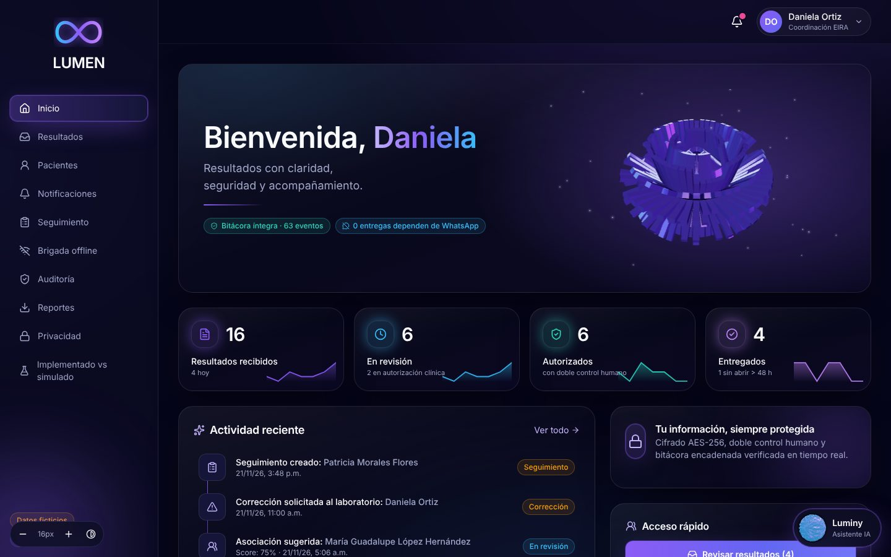
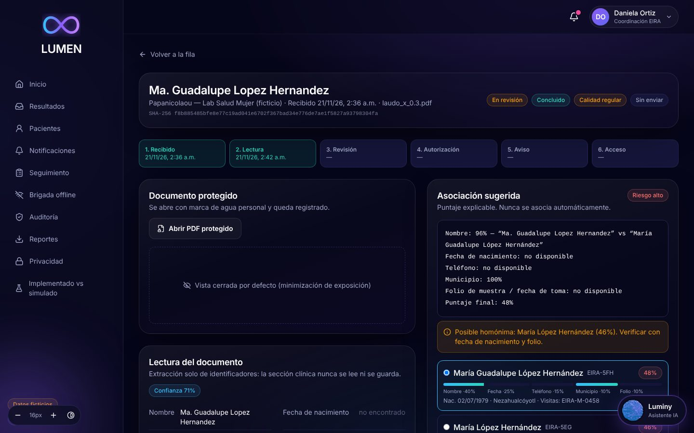
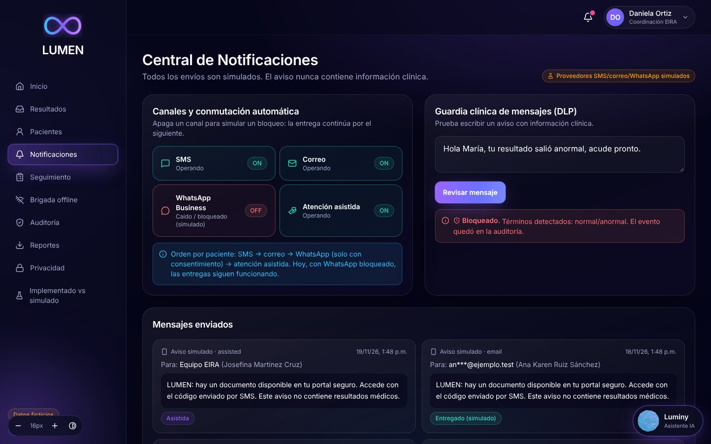
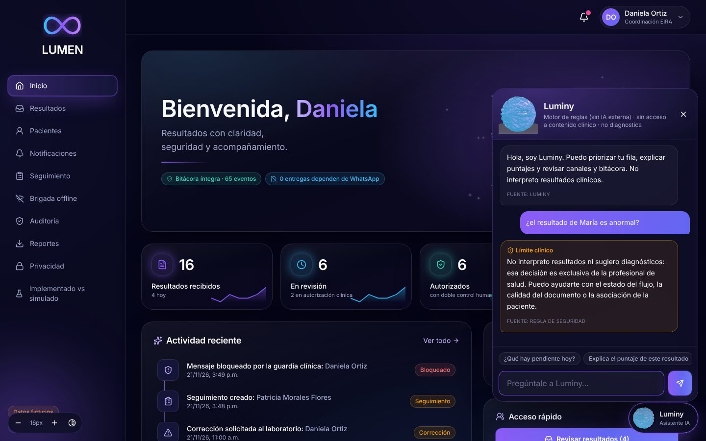
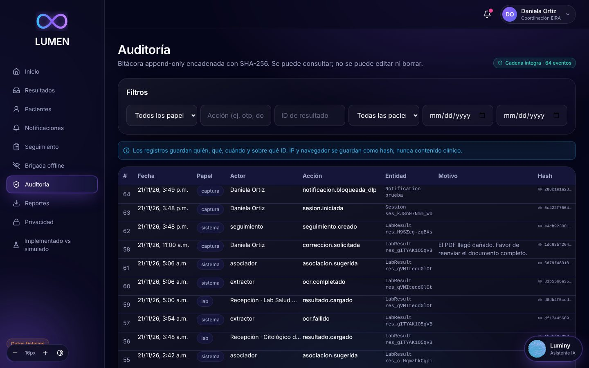
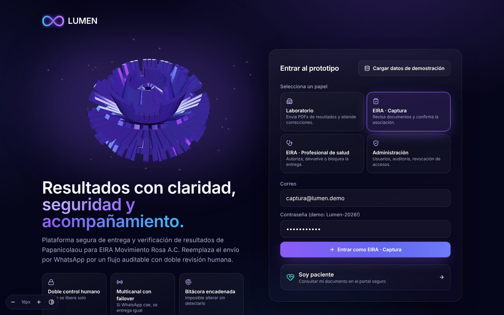

Plataforma segura de entrega y verificación de resultados de Papanicolaou para EIRA Movimiento Rosa A.C. Reemplaza el envío por WhatsApp por un flujo auditable con doble revisión humana.
Prototipo · todos los datos son ficticios · la IA no diagnosticaMás de 300 resultados al mes se escanean, se asocian por nombre y se envían por WhatsApp. Cuando la cuenta se bloquea, las entregas se detienen.
Ningún resultado se libera automáticamente.
Más allá de lo pedido en el reto.
SMS → correo → WhatsApp Business → atención asistida. Si un canal se bloquea, la entrega sigue.
Imposible enviar “resultado anormal”, “VPH” o “lesión” en un aviso. Queda auditado.
Prioriza la fila con datos en vivo y se niega a interpretar resultados; ofrece contacto con una profesional.
Cada evento incluye el hash del anterior: borrar o editar una línea se detecta al instante.
Dígito verificador RENAPO y riesgo alto si dos candidatas están demasiado cerca.
Captura sin internet con fila local y resolución humana de conflictos. Nada se sobrescribe en silencio.
Prototipo funcionando con datos ficticios.






| Implementado | Carga validada, cifrado en reposo, extracción de identificadores, controles de calidad, CURP, puntaje explicable, doble control, reautenticación, RBAC, sesiones seguras, CSRF, rate limiting, OTP, código asistido, enlaces firmados, marca de agua, DLP, failover, seguimiento, bitácora encadenada, exportación anonimizada, modo offline, verificación de presencia en el dispositivo, accesibilidad, Luminy. |
| Simulado (rotulado) | Proveedores de SMS/correo/WhatsApp, caídas de canal, OCR de escaneos, la “otra brigada” del conflicto offline, integración con laboratorios. |
| Stack | Next.js 15 · React 19 · TypeScript · Tailwind · three.js / React Three Fiber · pdf.js · pdf-lib · Zod · Dexie · Valkey (opcional) · Vitest |